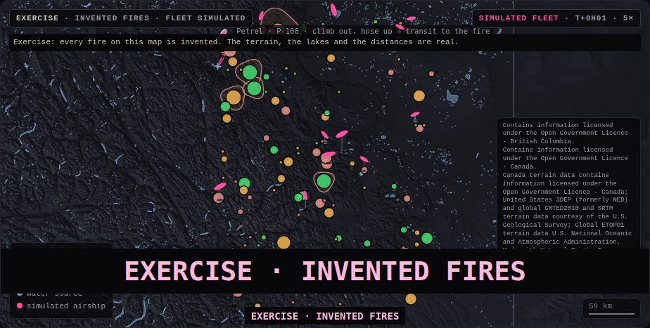

← Pink Robotics Autonomous fleet monitor — exercise · invented fires · simulated fleet · not for emergency use How it works · sources →
The fleet · 16 simulated hulls · shared
| P-10000 ×1 · outside the 96 m envelope | ||
| Condor | Exercise 034 | 10,277 kL/h sim |
| P-1000 ×5 · outside the 96 m envelope | ||
| Osprey | Exercise 090 | 780 kL/h sim |
| Pelican | Exercise 094 | 1,761 kL/h sim |
| Heron | Exercise 044 | 1,126 kL/h sim |
| Albatross | Exercise 057 | 1,055 kL/h sim |
| Skimmer | Exercise 039 | 1,171 kL/h sim |
| P-100 ×10 | ||
| Kingfisher | Exercise 074 | 147 kL/h sim |
| Tern | Exercise 116 | 147 kL/h sim |
| Merganser | Exercise 106 | 159 kL/h sim |
| Dipper | Exercise 049 | 305 kL/h sim |
| Grebe | Exercise 045 | 277 kL/h sim |
| Loon | Exercise 097 | 184 kL/h sim |
| Swift | Exercise 058 | 232 kL/h sim |
| Petrel | Exercise 022 | 155 kL/h sim |
| Kestrel | Exercise 013 | 310 kL/h sim |
| Auklet | Exercise 078 | 319 kL/h sim |
Allocation over invented exercise fires. This printed copy is the fixed exercise bundled with this page.
The fleet is simulated. The flight model assumes a hull that floats; no drawn hull does.
Largest exercise fires · invented sizes · assigned or waiting (rates simulated)
| Exercise 090 | 146,864 ha | Osprey | 780 kL/h sim |
| Exercise 034 | 42,240 ha | Condor | 10,277 kL/h sim |
| Exercise 022 | 6,748 ha | Petrel | 155 kL/h sim |
| Exercise 057 | 2,782 ha | Albatross | 1,055 kL/h sim |
| Exercise 044 | 2,402 ha | Heron | 1,126 kL/h sim |
| Exercise 039 | 2,007 ha | Skimmer | 1,171 kL/h sim |
| Exercise 094 | 1,744 ha | Pelican | 1,761 kL/h sim |
| Exercise 074 | 1,675 ha | Kingfisher | 147 kL/h sim |
Invented exercise sizes, fitted to aggregate season quantiles. This printed copy is the fixed exercise bundled with this page.
Exercise: every fire is invented. Sizes and stages of control are drawn from aggregate season distributions. The ships and their releases are simulated.
Airship focus · —
earlier model · under reviewThese energy figures come from the earlier flight model, which understates the force needed to hold an empty hull down. Corrected figures will be higher, and some cycles may not be flyable as drawn.
Ship systems
Nothing selected yet. Tap a ship on the map, or a row in the fleet list, and its forces, phase and systems appear here.
Arrow keys pan, plus and minus zoom, Escape clears the selection. Every simulated airship is also listed as text in the fleet roster panel. The largest fires waiting for or receiving one are listed in the top fires panel. Selecting a row in either selects the same thing here, and the selected ship's full record is written out in the operation panel. The map also draws every fire in the provincial feed, satellite hotspots, water bodies, and routes, which are not listed as text anywhere on this page.
being held
under control
water source
satellite heat, 24 h
simulated airship
Contains information licensed under the Open Government Licence - Canada.
Canada terrain data contains information licensed under the Open Government Licence - Canada; United States 3DEP (formerly NED) and global GMTED2010 and SRTM terrain data courtesy of the U.S. Geological Survey; Global ETOPO1 terrain data U.S. National Oceanic and Atmospheric Administration.
Made with Natural Earth. Free vector and raster map data @ naturalearthdata.com.
Weather data by Open-Meteo.com.
Data, licences and notices
The airship, simulated · — · driven by the same state as everything else here
Pick a ship: tap one on the map, or a row in the fleet list. It is drawn here, flying the same simulation.
Sixteen simulated hulls and the fires they serve, named for water birds. Divers fly the P-100s, scoopers the P-1000s, and Condor is the one P-10000. The crush envelope closes near 96 m of hull diameter, and the two larger classes live outside it. Figure 2 on the front page shows where. They fly here to find where the arithmetic breaks. Click any row to open its cockpit.
The fires this view shows, real or invented as its label says. The moving ships are simulated. Drag, zoom, click anything for its record.
The selected airship, driven by the same simulation. Buttons highlight each system; drag to look around.
Forces, phase, and what is hanging under the ship: the anchor cable and the intake hose in metres, plus the power bars and the storage gauge.
Why the allocator was allowed this fire, this water, this line.
tap anywhere to open the monitor
Exercise: every fire on this map is invented. The terrain, the lakes and the distances are real.
EXERCISE · INVENTED FIRES
The monitor, standing still: an exercise
No fire shown here happened. No aircraft flew. The exercise shows how the simulated fleet chooses under load. Its ground was chosen at least 150 km from every 2026 fire on the guard list and from every wildfire of note in the season record.
This fixed exercise supplies the poster and the no-script reference scene. It is not a date or an agency record. Its 117 fires have invented positions, sizes and stages of control; 43 are out of control in the exercise. The terrain and lakes are bundled public data. The fires use aggregate distributions from the busiest captured season days, never individual incidents. The seed, fitted numbers and distance checks are in the exercise provenance.
Bone marks exercise fire data; pink marks the simulated fleet. With scripts on, live remains the default view and the day control offers “Exercise: invented fires”. If the live mirror fails, the page shows the newest fleet day as a replay; it does not switch to this exercise.
The flight model assumes a hull that floats. Nothing floats today as drawn. The float case explains the unresolved structural requirements.
The exercise fires: all invented
The top-fires panel lists the largest invented out-of-control fires. 27 exercise fires qualify for a ship but receive none in this allocation.
The fleet: 16 simulated hulls
A fixed demonstration fleet is allocated among the largest out-of-control fires it may work. It has 10 P-100s at 100 t of water and 110 m each, 5 P-1000s at 1,000 t and 238 m, and one P-10000 at 10,000 t and 512 m. In this exercise allocation all 16 hulls are flying. The full roster, hull by hull, is in the fleet panel above.

One mission, worked
Petrel, a P-100, is assigned in the simulation to Exercise 022 (EX022: 6,748 ha, out of control). It fills from Aline Lake (74 ha of mapped surface), a 17.9 km leg from the fire. One cycle takes about 39 minutes: approach the water, pump aboard, transit, and drop along the fire. It escapes on the surplus buoyancy the drop just created and returns while making nitrogen ballast. It releases 100 t of water over its planned lines, releasing at a modelled 155 kL/h over this invented fire; released water is not suppression. The cycle is computed end to end from invented exercise fires and real water data. Simulation, not operations: no such aircraft exists.